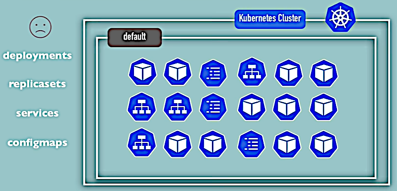
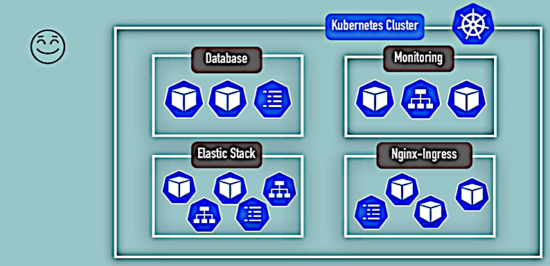
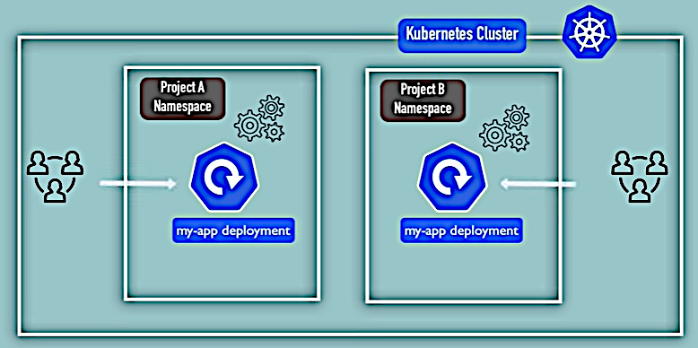
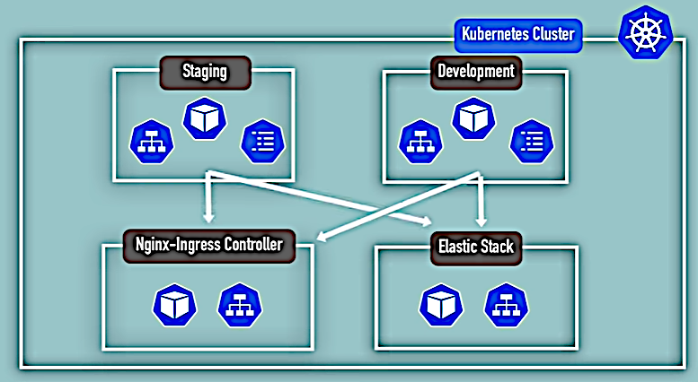
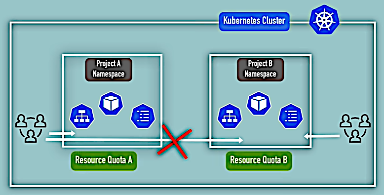
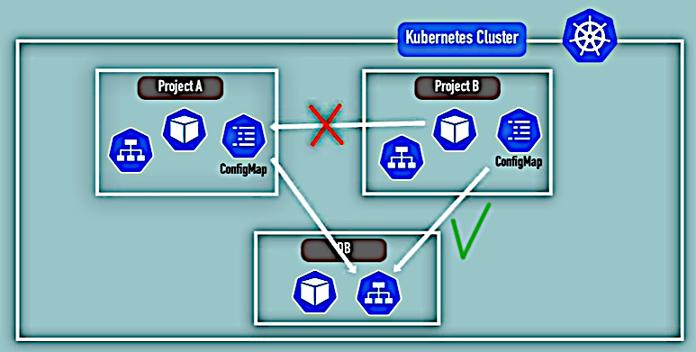

Namespaces
Namespaces
Namespaces
A Namespace may be thought as a virtual cluster inside a cluster.
$ kubectl get namespaces
NAME STATUS AGE
default Active 3d17h
kube-node-lease Active 3d17h
kube-public Active 3d17h
kube-system Active 3d17h
kubernetes-dashboard Active 3d17hkubernetes-dashboard namespace is specific to minikube installation. It's not present in a real
K8s cluster.
kube-system is not for user's components and must not be modified by the users. It contains
system processes, Master and Kubectl processes, etc.
kube-public is for publicly accessible data like ConfigMap that contains cluster information
and is accessible even without authentication:
$ kubectl cluster-info
Kubernetes control plane is running at https://192.168.49.2:8443
KubeDNS is running at https://192.168.49.2:8443/api/v1/namespaces/kube-system/services/kube-dns:dns/proxykube-node-lease is present in the recent edition of K8s. Contains heartbeats of the Nodes. Each
Node has associated lease object in this Namespace, that determines the availability of the Node.
default Namespace contains all created user's components if the other Namespaces are not created.
$ kubectl create namespace my-namespace
namespace/my-namespace created
$ kubectl get namespaces
NAME STATUS AGE
. . .
my-namespace Active 3sBut it's probably better to create a Namespace using configuration files:
apiVersion: v1
kind: ConfigMap
metadata:
name: mysql-configmap
namespace: my-namespace
data:
db_url: mysql-service.databaseAlso see K8s documentation, section Namespaces.

With one Namespace it's difficult to overview the architecture.

According to the official K8s documentation using Namespaces should not be considered for smaller projects with fewer users. Though even in smaller projects there may be common resources like logging and monitoring systems, and Namespaces help to separate them for better overview.

If two teams develop different applications with (somehow) the same name then Namespaces will prevent name conflicts and thus interference on deployment.

We can use the same resources for the different development state deployments. I.e. we don't need to include the common resources (such as databases) into each deployment. Such architecture may be used in Blue-green deployment when there are two servers and only one of them accepts external requests. The other is accessible only inside the company's internal network and is used for testing the changes. Then, when the changes are tested, the servers swap their roles.

Two teams may be prevented from interfering each other's projects. Also resource restrictions (like CPU, RAM, storage, etc.) may be defined for a Namespace.
Most components cannot be accessed across the Namespaces.

Particularly, such components are ConfigMaps and Secrets. We need to create them for each Namespace if required.
But Services can be shared across Namespaces. The references are done using the dot notation:
apiVersion: v1
kind: ConfigMap
. . .
data:
db_url: mysql-service.databaseHere mysql-service is the Namespace and database is the Service.
Some components cannot be created within a Namespace, they must belong globally to the cluster only. Such components are Volumes and Nodes.
$ kubectl api-resources --namespaced=true
NAME SHORTNAMES APIVERSION NAMESPACED KIND
. . .
configmaps cm v1 true ConfigMap
pods po v1 true Pod
secrets v1 true Secret
services svc v1 true Service
deployments deploy apps/v1 true Deployment
replicasets rs apps/v1 true ReplicaSet
statefulsets sts apps/v1 true StatefulSet
. . .
$ kubectl api-resources --namespaced=false
NAME SHORTNAMES APIVERSION NAMESPACED KIND
. . .
namespaces ns v1 false Namespace
nodes no v1 false Node
. . .If we don't provide a Namespace like this (there's just a name element in metadata):
apiVersion: v1
kind: ConfigMap
metadata:
name: mysql-configmap
data:
db_url: mysql-service.databasethen the component is created in the default Namespace. Let's check it:
$ vi mysql-configmap.yamlAdd the ConfigMap content above:
$ kubectl apply -f mysql-configmap.yaml
configmap/mysql-configmap created
$ kubectl get configmap -n default
NAME DATA AGE
mysql-configmap 1 76s
$ kubectl describe configmap mysql-configmap
Name: mysql-configmap
Namespace: default
. . .We can define the namespace on the component creation:
$ kubectl apply -f mysql-configmap.yaml --namespace=my-namespace
configmap/mysql-configmap created
$ kubectl get configmap -n my-namespace
NAME DATA AGE
mysql-configmap 1 5m52s
$ kubectl describe configmap mysql-configmap -n my-namespace
Name: mysql-configmap
Namespace: my-namespace
. . .But this method is impractical. It's better to define the namespace in the configuration file metadata:
apiVersion: v1
kind: ConfigMap
metadata:
name: mysql-configmap
namespace: my-namespace
data:
db_url: mysql-service.database$ kubectl delete -f mysql-configmap.yaml
configmap "mysql-configmap" deleted
$ kubectl apply -f mysql-configmap.yaml
configmap/mysql-configmap created
$ kubectl get configmap -n my-namespace
NAME DATA AGE
mysql-configmap 1 79sThis method gives more self-documented source code.
Adding -n my-namespace to all command is inconvenient. But K8s and Kubectl doesn't have a
solution to set an active Namespace neither globally nor for a session.
There's a separate tool kubens that is provided with the other tool kubectx, see
here. But its installation process looks very unfriendly,
and it failed to install on Ubuntu. So I'm not going to use this tool in this course.
And this may be not a good idea to let a third-party tool intervene in every command of such a complex process.